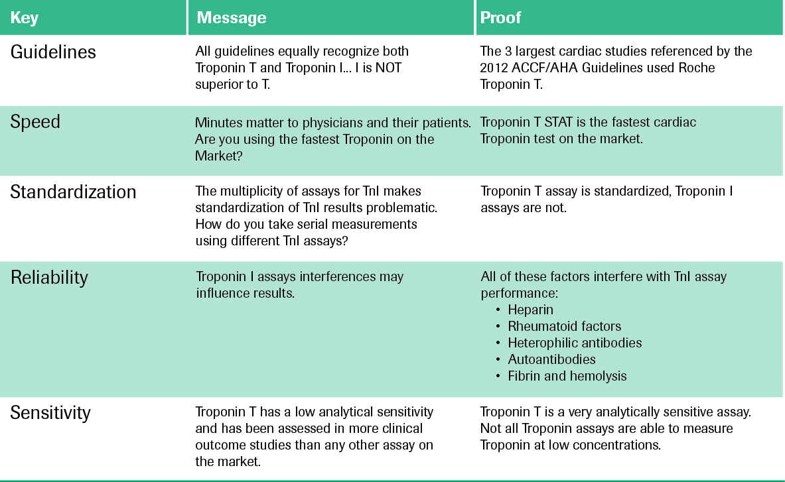

Roche’s Troponin T delivers quick and reliable answers for your patients

GUIDELINES
All guidelines equally recognize both Troponin T and Troponin I… I is NOT superior to T.
SPEED
Troponin T STAT is the fastest cardiac Troponin test on the market.
STANDARDIZATION
Troponin T assay is standardized, Troponin I assays are not.
RELIABILITY
Troponin I assays interferences may influence results.
SENSITIVITY
Troponin T has a low analytical sensitivity and has been assessed in more clinical outcome studies than any other assay
on the market.